SymmetricMatrix¶
- class SymmetricMatrix(*args)¶
Real symmetric matrix.
- Parameters:
- sizeint,
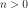
, optional Matrix size. Default is 1.
- valuessequence of float with size
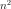
, optional Values. OpenTURNS uses column-major ordering (like Fortran) for reshaping the flat list of values. Default creates a zero matrix.
- sizeint,
- Raises:
- TypeErrorIf the matrix is not symmetric.
Examples
Create a matrix
>>> import openturns as ot >>> M = ot.SymmetricMatrix(2, [0.0, 2.0, 2.0, 1.0]) >>> print(M) [[ 0 2 ] [ 2 1 ]]
Get or set terms
>>> print(M[0, 0]) 0.0 >>> M[0, 0] = 1.0 >>> print(M[0, 0]) 1.0 >>> print(M[:, 0]) [[ 1 ] [ 2 ]]
Create an openturns matrix from a symmetric numpy 2d-array (or matrix, or 2d-list)…
>>> import numpy as np >>> np_2d_array = np.array([[1.0, 2.0], [2.0, 4.0]]) >>> ot_matrix = ot.SymmetricMatrix(np_2d_array)
and back
>>> np_matrix = np.matrix(ot_matrix)
Methods
Check if the internal representation is really symmetric.
clean(threshold)Set elements smaller than a threshold to zero.
computeDeterminant([keepIntact])Compute the determinant.
computeEV([keepIntact])Compute the eigenvalues decomposition (EVD).
computeEigenValues([keepIntact])Compute eigenvalues.
computeGram([transpose])Compute the associated Gram matrix.
Compute the largest eigenvalue module.
computeLogAbsoluteDeterminant([keepIntact])Compute the logarithm of the absolute value of the determinant.
computeQR([fullQR, keepIntact])Compute the QR factorization.
computeSVD([fullSVD, keepIntact])Compute the singular values decomposition (SVD).
computeSingularValues([keepIntact])Compute the singular values.
Compute the trace of the matrix.
Accessor to the object's name.
Accessor to the dimension (the number of rows).
getId()Accessor to the object's id.
Accessor to the underlying implementation.
getName()Accessor to the object's name.
Accessor to the number of columns.
Accessor to the number of rows.
Test whether the matrix is diagonal or not.
isEmpty()Tell if the matrix is empty.
reshape(newRowDim, newColDim)Reshape the matrix.
reshapeInPlace(newRowDim, newColDim)Reshape the matrix, in place.
setName(name)Accessor to the object's name.
solveLinearSystem(*args)Solve a square linear system whose the present matrix is the operator.
Transpose the matrix.
computeHadamardProduct
computeSumElements
getDiagonal
setDiagonal
squareElements
- __init__(*args)¶
- checkSymmetry()¶
Check if the internal representation is really symmetric.
- clean(threshold)¶
Set elements smaller than a threshold to zero.
- Parameters:
- thresholdfloat
Threshold for zeroing elements.
- Returns:
- cleaned_matrix
Matrix Input matrix with elements smaller than the threshold set to zero.
- cleaned_matrix
- computeDeterminant(keepIntact=True)¶
Compute the determinant.
- Parameters:
- keep_intactbool, optional
A flag telling whether the present matrix can be overwritten or not. Default is True and leaves the present matrix unchanged.
- Returns:
- determinantfloat
The square matrix determinant.
Examples
>>> import openturns as ot >>> A = ot.SquareMatrix([[1.0, 2.0], [3.0, 4.0]]) >>> A.computeDeterminant() -2.0
- computeEV(keepIntact=True)¶
Compute the eigenvalues decomposition (EVD).
The eigenvalues decomposition of a square matrix
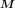
with size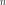
reads: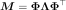
where
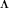
is an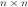
diagonal matrix and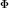
is an orthogonal matrix.- Parameters:
- keep_intactbool, optional
A flag telling whether the present matrix can be overwritten or not. Default is True and leaves the present matrix unchanged.
- Returns:
- eigenvalues
Point The vector of eigenvalues with size that form the diagonal of the matrix of the EVD.
- Phi
SquareComplexMatrix The left matrix of the EVD.
- eigenvalues
Notes
This uses LAPACK’S DSYEV.
Examples
>>> import openturns as ot >>> import numpy as np >>> M = ot.SymmetricMatrix([[1.0, 2.0], [2.0, -4.0]]) >>> eigen_values, Phi = M.computeEV() >>> Lambda = ot.SquareMatrix(M.getDimension()) >>> for i in range(eigen_values.getSize()): ... Lambda[i, i] = eigen_values[i] >>> np.testing.assert_array_almost_equal(Phi * Lambda * Phi.transpose(), M)
- computeEigenValues(keepIntact=True)¶
Compute eigenvalues.
- Parameters:
- keep_intactbool, optional
A flag telling whether the present matrix can be overwritten or not. Default is True and leaves the present matrix unchanged.
- Returns:
- eigenvalues
Point Eigenvalues.
- eigenvalues
See also
Examples
>>> import openturns as ot >>> M = ot.SymmetricMatrix([[1.0, 2.0], [2.0, -4.0]]) >>> print(M.computeEigenValues()) [-4.70156,1.70156]
- computeGram(transpose=True)¶
Compute the associated Gram matrix.
- Parameters:
- transposedbool
Tells if matrix is to be transposed or not. Default value is True
- Returns:
- MMT
Matrix The Gram matrix.
- MMT
Notes
When transposed is set to True, the method computes
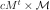
. Otherwise it computes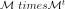
Examples
>>> import openturns as ot >>> M = ot.Matrix([[1.0, 2.0], [3.0, 4.0], [5.0, 6.0]]) >>> MtM = M.computeGram() >>> print(MtM) [[ 35 44 ] [ 44 56 ]] >>> MMt = M.computeGram(False) >>> print(MMt) [[ 5 11 17 ] [ 11 25 39 ] [ 17 39 61 ]]
- computeLargestEigenValueModule(*args)¶
Compute the largest eigenvalue module.
- Parameters:
- maximumIterationsint, optional
The maximum number of power iterations to perform to get the approximation. Default is given by the ‘Matrix-LargestEigenValueIterations’ key in the
ResourceMap.- epsilonfloat, optional
The target relative error. Default is given by the ‘Matrix-LargestEigenValueRelativeError’ key in the
ResourceMap.
- Returns:
- largestEigenvalueModulefloat
The largest eigenvalue module.
See also
Examples
>>> import openturns as ot >>> M = ot.SymmetricMatrix([[1.0, 3.0], [3.0, 4.0]]) >>> M.computeLargestEigenValueModule() 5.8541...
- computeLogAbsoluteDeterminant(keepIntact=True)¶
Compute the logarithm of the absolute value of the determinant.
- Parameters:
- keep_intactbool, optional
A flag telling whether the present matrix can be overwritten or not. Default is True and leaves the present matrix unchanged.
- Returns:
- determinantfloat
The logarithm of the absolute value of the square matrix determinant.
- signfloat
The sign of the determinant.
Examples
>>> import openturns as ot >>> A = ot.SquareMatrix([[1.0, 2.0], [3.0, 4.0]]) >>> A.computeLogAbsoluteDeterminant() [0.693147..., -1.0]
- computeQR(fullQR=False, keepIntact=True)¶
Compute the QR factorization. By default, it is the economic decomposition which is computed.
The economic QR factorization of a rectangular matrix with
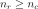
(more rows than columns) is defined as follows: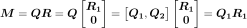
where
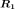
is an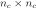
upper triangular matrix,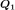
is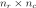
,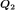
is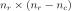
, and and both have orthogonal columns.- Parameters:
- full_qrbool, optional
A flag telling whether Q, R or Q1, R1 are returned. Default is False and returns Q1, R1.
- keep_intactbool, optional
A flag telling whether the present matrix is preserved or not in the computation of the decomposition. Default is True and leaves the present matrix unchanged.
- Returns:
- Q1
Matrix The orthogonal matrix of the economic QR factorization.
- R1
TriangularMatrix The right (upper) triangular matrix of the economic QR factorization.
- Q
Matrix The orthogonal matrix of the full QR factorization.
- R
TriangularMatrix The right (upper) triangular matrix of the full QR factorization.
- Q1
Notes
The economic QR factorization is often used for solving overdetermined linear systems (where the operator has ) in the least-square sense because it implies solving a (simple) triangular system:
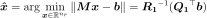
This uses LAPACK’s DGEQRF and DORGQR.
Examples
>>> import openturns as ot >>> import numpy as np >>> M = ot.Matrix([[1.0, 2.0], [3.0, 4.0], [5.0, 6.0]]) >>> Q1, R1 = M.computeQR() >>> np.testing.assert_array_almost_equal(Q1 * R1, M)
- computeSVD(fullSVD=False, keepIntact=True)¶
Compute the singular values decomposition (SVD).
The singular values decomposition of a rectangular matrix with size
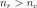
reads: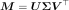
where
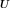
is an orthogonal matrix,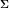
is an diagonal matrix and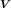
is an orthogonal matrix.- Parameters:
- fullSVDbool, optional
Whether the null parts of the orthogonal factors are explicitly stored or not. Default is False and computes a reduced SVD.
- keep_intactbool, optional
A flag telling whether the present matrix can be overwritten or not. Default is True and leaves the present matrix unchanged.
- Returns:
- singular_values
Point The vector of singular values with size
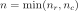
that form the diagonal of the matrix of the SVD.- U
SquareMatrix The left orthogonal matrix of the SVD.
- VT
SquareMatrix The transposed right orthogonal matrix of the SVD.
- singular_values
Notes
This uses LAPACK’s DGESDD.
Examples
>>> import openturns as ot >>> import numpy as np >>> M = ot.Matrix([[1.0, 2.0], [3.0, 4.0], [5.0, 6.0]]) >>> singular_values, U, VT = M.computeSVD(True) >>> Sigma = ot.Matrix(M.getNbRows(), M.getNbColumns()) >>> for i in range(singular_values.getSize()): ... Sigma[i, i] = singular_values[i] >>> np.testing.assert_array_almost_equal(U * Sigma * VT, M)
- computeSingularValues(keepIntact=True)¶
Compute the singular values.
- Parameters:
- fullSVDbool, optional
Whether the null parts of the orthogonal factors are explicitly stored or not. Default is False and computes a reduced SVD.
- keep_intactbool, optional
A flag telling whether the present matrix can be overwritten or not. Default is True and leaves the present matrix unchanged.
- Returns:
- singular_values
Point The vector of singular values with size that form the diagonal of the matrix of the SVD decomposition.
- singular_values
See also
Examples
>>> import openturns as ot >>> M = ot.Matrix([[1.0, 2.0], [3.0, 4.0], [5.0, 6.0]]) >>> print(M.computeSingularValues(True)) [9.52552,0.514301]
- computeTrace()¶
Compute the trace of the matrix.
- Returns:
- tracefloat
The trace of the matrix.
Examples
>>> import openturns as ot >>> M = ot.SquareMatrix([[1.0, 2.0], [3.0, 4.0]]) >>> M.computeTrace() 5.0
- getClassName()¶
Accessor to the object’s name.
- Returns:
- class_namestr
The object class name (object.__class__.__name__).
- getDimension()¶
Accessor to the dimension (the number of rows).
- Returns:
- dimensionint
- getId()¶
Accessor to the object’s id.
- Returns:
- idint
Internal unique identifier.
- getImplementation()¶
Accessor to the underlying implementation.
- Returns:
- implImplementation
A copy of the underlying implementation object.
- getName()¶
Accessor to the object’s name.
- Returns:
- namestr
The name of the object.
- getNbColumns()¶
Accessor to the number of columns.
- Returns:
- n_columnsint
- getNbRows()¶
Accessor to the number of rows.
- Returns:
- n_rowsint
- isDiagonal()¶
Test whether the matrix is diagonal or not.
- Returns:
- testbool
Answer.
- isEmpty()¶
Tell if the matrix is empty.
- Returns:
- is_emptybool
True if the matrix contains no element.
Examples
>>> import openturns as ot >>> M = ot.Matrix([[]]) >>> M.isEmpty() True
- reshape(newRowDim, newColDim)¶
Reshape the matrix.
- Parameters:
- newRowDimint
The row dimension of the reshaped matrix.
- newColDimint
The column dimension of the reshaped matrix.
- Returns:
- MT
Matrix The reshaped matrix.
- MT
Notes
If the size of the reshaped matrix is smaller than the size of the matrix to be reshaped, only the
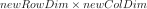
first elements are kept (in a column-major storage sense). If the size is greater, the new elements are set to zero.Examples
>>> import openturns as ot >>> M = ot.Matrix([[1.0, 2.0], [3.0, 4.0], [5.0, 6.0]]) >>> print(M) [[ 1 2 ] [ 3 4 ] [ 5 6 ]] >>> print(M.reshape(1, 6)) 1x6 [[ 1 3 5 2 4 6 ]] >>> print(M.reshape(2, 2)) [[ 1 5 ] [ 3 2 ]] >>> print(M.reshape(2, 6)) 2x6 [[ 1 5 4 0 0 0 ] [ 3 2 6 0 0 0 ]]
- reshapeInPlace(newRowDim, newColDim)¶
Reshape the matrix, in place.
- Parameters:
- newRowDimint
The row dimension of the reshaped matrix.
- newColDimint
The column dimension of the reshaped matrix.
Notes
If the size of the reshaped matrix is smaller than the size of the matrix to be reshaped, only the first elements are kept (in a column-major storage sense). If the size is greater, the new elements are set to zero. If the size is unchanged, no copy of data is done.
Examples
>>> import openturns as ot >>> M = ot.Matrix([[1.0, 2.0], [3.0, 4.0], [5.0, 6.0]]) >>> print(M) [[ 1 2 ] [ 3 4 ] [ 5 6 ]] >>> M.reshapeInPlace(1, 6) >>> print(M) 1x6 [[ 1 3 5 2 4 6 ]] >>> M.reshapeInPlace(2, 2) >>> print(M) [[ 1 5 ] [ 3 2 ]] >>> M.reshapeInPlace(2, 6) >>> print(M) 2x6 [[ 1 5 0 0 0 0 ] [ 3 2 0 0 0 0 ]]
- setName(name)¶
Accessor to the object’s name.
- Parameters:
- namestr
The name of the object.
- solveLinearSystem(*args)¶
Solve a square linear system whose the present matrix is the operator.
- Parameters:
- rhssequence of float or
Matrixwith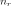
values or rows, respectively The right hand side member of the linear system.
- keep_intactbool, optional
A flag telling whether the present matrix can be overwritten or not. Default is True and leaves the present matrix unchanged.
- rhssequence of float or
- Returns:
Notes
This will handle both matrices and vectors. Note that you’d better type explicitly the matrix if it has some properties that could simplify the resolution (see
TriangularMatrix).This uses LAPACK’S DGESV for matrices and DGELSY for vectors.
Examples
>>> import openturns as ot >>> import numpy as np >>> M = ot.SquareMatrix([[1.0, 2.0], [3.0, 4.0]]) >>> b = ot.Point([1.0] * 2) >>> x = M.solveLinearSystem(b) >>> np.testing.assert_array_almost_equal(M * x, b)
- transpose()¶
Transpose the matrix.
- Returns:
- MT
SquareMatrix The transposed matrix.
- MT
Examples
>>> import openturns as ot >>> M = ot.SquareMatrix([[1.0, 2.0], [3.0, 4.0]]) >>> print(M) [[ 1 2 ] [ 3 4 ]] >>> print(M.transpose()) [[ 1 3 ] [ 2 4 ]]
Examples using the class¶


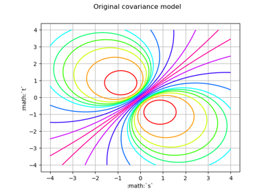
Estimate a non stationary covariance function


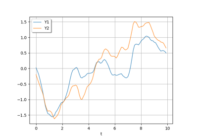
Sample trajectories from a Gaussian Process with correlated outputs


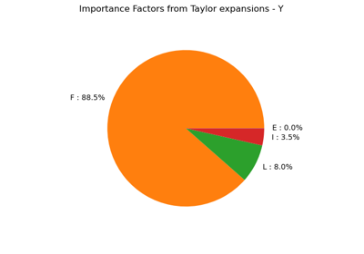
Analyse the central tendency of a cantilever beam

Use the post-analytical importance sampling algorithm


Estimate Sobol indices on a field to point function
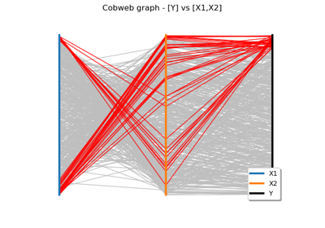
Parallel coordinates graph as sensitivity tool

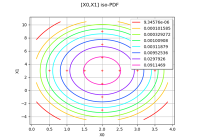
Create mixed deterministic and probabilistic designs of experiments
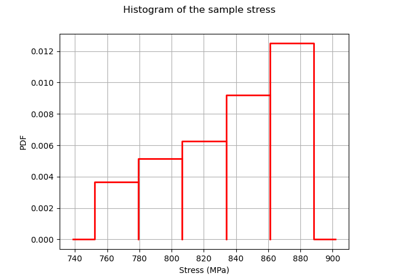
Calibration of the Chaboche mechanical model

Linear Regression with interval-censored observations